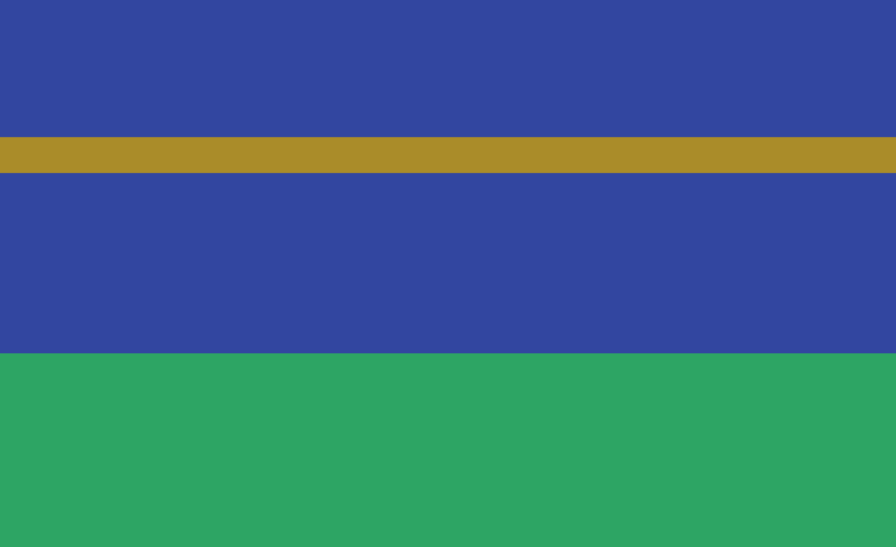
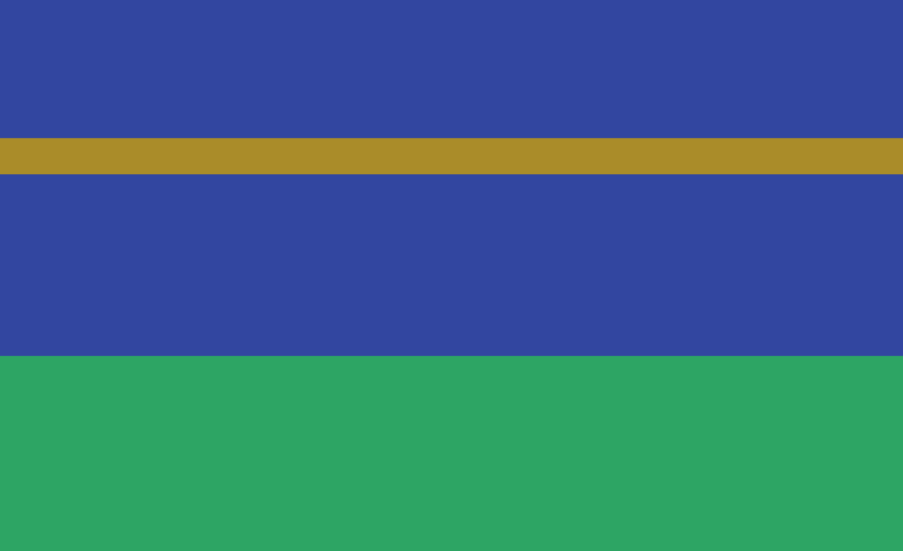

Today the official Dragon Blazers website was updated with a bunch of weird links.
I searched around the official website for clues, and found about 26 pages so far.
It doesn't seem to be an ARG, as there's no puzzles, and it doesn't lead to anything.
Anyone else think the devs might have been eating a little too much fruitcake this year? XP